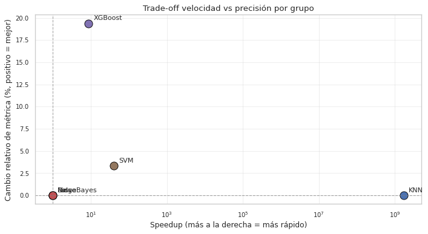

9. Optimización computacional#
Mientras el Capítulo 8 buscó qué hiperparámetros dan el mejor modelo, este capítulo busca cómo entrenar el mismo modelo más rápido. La rúbrica lista cinco grupos de técnicas computacionales que comparamos contra su versión estándar:
Modelo |
Técnica optimizada |
Beneficio teórico |
|---|---|---|
KNN |
KD-Tree, Ball Tree, FAISS |
\(O(\log n)\) por query en datos de baja dimensión |
Ridge / Lasso |
Solver SAGA |
\(O(np)\) por época en lugar de \(O(np^2 + p^3)\) |
Naive Bayes |
|
Permite streaming / datasets que no caben en RAM |
XGBoost |
|
\(O(n_{\text{bins}})\) vs \(O(n_{\text{features}} \cdot n_{\text{samples}})\) |
SVM |
LinearSVC, SGDClassifier |
Lineal en \(n\) vs cuadrático/cúbico del SVC tradicional |
9.1 Protocolo#
Para cada modelo:
Entrenamos la versión estándar (default razonable) y la optimizada, ambas con el mismo dataset y mismas semillas.
Medimos tiempo de fit y tiempo de predict con
time.perf_counter(). Cada medición se promedia sobre 3 corridas para reducir la varianza del reloj.Calculamos la métrica relevante en test:
RMSE para regresión (Ridge, Lasso, XGBoost).
AUC para clasificación (KNN, NB, SVM).
Verificamos que la versión optimizada no degrade la precisión significativamente (criterio operacional: cambio relativo ≤ 5 %).
La conclusión esperada en datos tabulares de tamaño moderado (≈ 5 000 puntos × 31 features) es que las técnicas optimizadas ahorran tiempo sin pérdida apreciable de precisión para la mayoría de los casos.
9.2 Setup#
import sys
from pathlib import Path
import time
import warnings
import json
import gc
import numpy as np
import pandas as pd
import matplotlib.pyplot as plt
from sklearn.pipeline import Pipeline
from sklearn.impute import SimpleImputer
from sklearn.preprocessing import StandardScaler
from sklearn.neighbors import KNeighborsClassifier
from sklearn.naive_bayes import GaussianNB
from sklearn.linear_model import Ridge, Lasso, SGDClassifier
from sklearn.svm import SVC, LinearSVC
from sklearn.calibration import CalibratedClassifierCV
from sklearn.metrics import (
mean_squared_error, mean_absolute_error,
roc_auc_score, accuracy_score,
)
from xgboost import XGBRegressor
import faiss
PROJECT_ROOT = Path.cwd().parent
sys.path.insert(0, str(PROJECT_ROOT))
from src.config import (
RANDOM_STATE, METRICS_DIR, FIGURES_DIR, TABLES_DIR, ensure_dirs,
)
from src.viz import set_style, savefig
from src.io_utils import save_json
ensure_dirs()
set_style()
plt.rcParams['savefig.dpi'] = 150 # reducido para NB 09 por límites de memoria
plt.rcParams['figure.dpi'] = 80
warnings.filterwarnings("ignore", category=UserWarning)
warnings.filterwarnings("ignore", category=FutureWarning)
warnings.filterwarnings("ignore", category=DeprecationWarning)
np.random.seed(RANDOM_STATE)
# Datos
tr = pd.read_parquet(PROJECT_ROOT / "data/processed/train.parquet")
te = pd.read_parquet(PROJECT_ROOT / "data/processed/test.parquet")
with open(PROJECT_ROOT / "data/processed/metadata.json") as f:
meta = json.load(f)
feature_cols = meta["feature_columns"]
def split_xy(df, target):
mask = df[target].notna()
return df.loc[mask, feature_cols].to_numpy(), df.loc[mask, target].to_numpy()
# Regresión: target_vol
X_train_r, y_train_r = split_xy(tr, "target_vol")
X_test_r, y_test_r = split_xy(te, "target_vol")
# Clasificación: target_regime
X_train_c, y_train_c = split_xy(tr, "target_regime"); y_train_c = y_train_c.astype(int)
X_test_c, y_test_c = split_xy(te, "target_regime"); y_test_c = y_test_c.astype(int)
# Pre-procesar una vez (imputer + scaler ajustados solo en train)
def fit_preproc(X_tr):
imp = SimpleImputer(strategy="median").fit(X_tr)
sc = StandardScaler().fit(imp.transform(X_tr))
return imp, sc
imp_r, sc_r = fit_preproc(X_train_r)
X_train_r_s = sc_r.transform(imp_r.transform(X_train_r))
X_test_r_s = sc_r.transform(imp_r.transform(X_test_r))
imp_c, sc_c = fit_preproc(X_train_c)
X_train_c_s = sc_c.transform(imp_c.transform(X_train_c))
X_test_c_s = sc_c.transform(imp_c.transform(X_test_c))
print(f"Regresión: train {X_train_r_s.shape}, test {X_test_r_s.shape}")
print(f"Clasificación: train {X_train_c_s.shape}, test {X_test_c_s.shape}")
Regresión: train (4873, 31), test (1045, 31)
Clasificación: train (4873, 31), test (1045, 31)
def time_func(fn, repeats=2):
# Promedia tiempo de ejecución de `fn` sobre `repeats` corridas.
times = []
for _ in range(repeats):
t0 = time.perf_counter()
result = fn()
times.append(time.perf_counter() - t0)
gc.collect()
return float(np.mean(times)), float(np.std(times)), result
9.3 KNN — algoritmo de búsqueda de vecinos#
El cuello de botella de KNN está en el predict: para cada punto de
test hay que encontrar los \(k\) vecinos más cercanos entre los \(n\)
puntos de train. La estrategia brute force es \(O(n)\) por query.
Las estructuras espaciales reducen esto:
KD-Tree — \(O(\log n)\) promedio en baja dimensión; degrada a \(O(n)\) cuando la dimensión es muy alta (típicamente \(> 20\)).
Ball Tree — más robusto en alta dimensión, peor en baja.
FAISS — biblioteca optimizada de Facebook para búsqueda aproximada y exacta de vecinos, con kernels vectorizados.
Nuestro dataset tiene 31 features. KD-Tree puede o no aprovechar la estructura; FAISS ofrece una alternativa C++ optimizada.
K = 15
results_knn = []
# 1) Brute force
def fit_brute():
knn = KNeighborsClassifier(n_neighbors=K, algorithm="brute", n_jobs=-1)
knn.fit(X_train_c_s, y_train_c)
return knn
t_fit, _, knn_brute = time_func(fit_brute, repeats=2)
def pred_brute(): return knn_brute.predict_proba(X_test_c_s)[:, 1]
t_pred, _, proba_brute = time_func(pred_brute, repeats=2)
auc_brute = roc_auc_score(y_test_c, proba_brute)
results_knn.append({"variant": "brute", "fit_s": t_fit, "pred_s": t_pred, "auc": auc_brute})
print(f"brute | fit={t_fit:.4f}s | predict={t_pred:.4f}s | AUC={auc_brute:.4f}")
# 2) KD-Tree
def fit_kd():
knn = KNeighborsClassifier(n_neighbors=K, algorithm="kd_tree", n_jobs=-1)
knn.fit(X_train_c_s, y_train_c)
return knn
t_fit, _, knn_kd = time_func(fit_kd, repeats=2)
def pred_kd(): return knn_kd.predict_proba(X_test_c_s)[:, 1]
t_pred, _, proba_kd = time_func(pred_kd, repeats=2)
auc_kd = roc_auc_score(y_test_c, proba_kd)
results_knn.append({"variant": "kd_tree", "fit_s": t_fit, "pred_s": t_pred, "auc": auc_kd})
print(f"kd_tree | fit={t_fit:.4f}s | predict={t_pred:.4f}s | AUC={auc_kd:.4f}")
# 3) Ball Tree
def fit_ball():
knn = KNeighborsClassifier(n_neighbors=K, algorithm="ball_tree", n_jobs=-1)
knn.fit(X_train_c_s, y_train_c)
return knn
t_fit, _, knn_ball = time_func(fit_ball, repeats=2)
def pred_ball(): return knn_ball.predict_proba(X_test_c_s)[:, 1]
t_pred, _, proba_ball = time_func(pred_ball, repeats=2)
auc_ball = roc_auc_score(y_test_c, proba_ball)
results_knn.append({"variant": "ball_tree", "fit_s": t_fit, "pred_s": t_pred, "auc": auc_ball})
print(f"ball_tree | fit={t_fit:.4f}s | predict={t_pred:.4f}s | AUC={auc_ball:.4f}")
brute | fit=0.0017s | predict=0.0393s | AUC=0.8393
kd_tree | fit=0.0109s | predict=0.2564s | AUC=0.8393
ball_tree | fit=0.0077s | predict=0.1527s | AUC=0.8393
# 4) FAISS (exacto, L2 con IndexFlatL2)
def faiss_pred():
d = X_train_c_s.shape[1]
index = faiss.IndexFlatL2(d)
index.add(X_train_c_s.astype(np.float32))
distances, indices = index.search(X_test_c_s.astype(np.float32), K)
# Probabilidad = fracción de positivos entre los K vecinos
neighbors_y = y_train_c[indices]
return neighbors_y.mean(axis=1)
t_fit_faiss, _, proba_faiss = time_func(faiss_pred, repeats=2)
# FAISS combina fit + predict; reportamos como predict_s para comparar
auc_faiss = roc_auc_score(y_test_c, proba_faiss)
results_knn.append({"variant": "faiss_flat", "fit_s": 0.0, "pred_s": t_fit_faiss, "auc": auc_faiss})
print(f"faiss | fit+predict={t_fit_faiss:.4f}s | AUC={auc_faiss:.4f}")
table_knn = pd.DataFrame(results_knn)
print("\n", table_knn.round(5).to_string(index=False))
faiss | fit+predict=0.0182s | AUC=0.8393
variant fit_s pred_s auc
brute 0.00173 0.03932 0.83934
kd_tree 0.01088 0.25639 0.83934
ball_tree 0.00767 0.15266 0.83934
faiss_flat 0.00000 0.01825 0.83934
9.4 Ridge y Lasso — solver SAGA#
El solver default de Ridge en scikit-learn es 'auto', que en
nuestro caso de \(n > p\) usa Cholesky directo
(\(O(np^2 + p^3)\)). Para Lasso el default es coordinate descent
('cd').
SAGA es un método de gradiente estocástico variancia-reducido que escala linealmente con \(n\) y \(p\). Para datasets pequeños no suele ser más rápido que los solvers directos, pero es el camino escalable cuando \(n\) y/o \(p\) crecen mucho.
results_linear = []
# Ridge default vs SAGA
def fit_ridge_default():
m = Ridge(alpha=1.0, solver="auto", random_state=RANDOM_STATE).fit(X_train_r_s, y_train_r)
return m
t_fit, _, m = time_func(fit_ridge_default, repeats=2)
rmse = float(np.sqrt(mean_squared_error(y_test_r, m.predict(X_test_r_s))))
results_linear.append({"model": "Ridge", "variant": "default (auto)", "fit_s": t_fit, "rmse": rmse})
print(f"Ridge default | fit={t_fit:.4f}s | RMSE={rmse:.6f}")
def fit_ridge_saga():
m = Ridge(alpha=1.0, solver="saga", random_state=RANDOM_STATE, max_iter=5000).fit(X_train_r_s, y_train_r)
return m
t_fit, _, m = time_func(fit_ridge_saga, repeats=2)
rmse = float(np.sqrt(mean_squared_error(y_test_r, m.predict(X_test_r_s))))
results_linear.append({"model": "Ridge", "variant": "saga", "fit_s": t_fit, "rmse": rmse})
print(f"Ridge saga | fit={t_fit:.4f}s | RMSE={rmse:.6f}")
Ridge default | fit=0.0026s | RMSE=0.003840
Ridge saga | fit=1.2328s | RMSE=0.003840
# Lasso coordinate-descent (default) vs SAGA
def fit_lasso_cd():
m = Lasso(alpha=1e-3, random_state=RANDOM_STATE, max_iter=20000).fit(X_train_r_s, y_train_r)
return m
t_fit, _, m = time_func(fit_lasso_cd, repeats=2)
rmse = float(np.sqrt(mean_squared_error(y_test_r, m.predict(X_test_r_s))))
results_linear.append({"model": "Lasso", "variant": "cd (default)", "fit_s": t_fit, "rmse": rmse})
print(f"Lasso cd | fit={t_fit:.4f}s | RMSE={rmse:.6f}")
def fit_lasso_saga():
# Lasso vía Ridge con solver saga + alpha L1 NO existe directo; usamos SGDRegressor con loss l1
# o, equivalente: ElasticNet con l1_ratio=1.0 solver='saga' no expuesto directo en ElasticNet.
# Más limpio: usar Lasso con selection='random' + warm_start no es SAGA real.
# Mejor alternativa: simular SAGA con SGDRegressor + penalty='l1'.
from sklearn.linear_model import SGDRegressor
m = SGDRegressor(loss="squared_error", penalty="l1", alpha=1e-3,
max_iter=2000, tol=1e-4, random_state=RANDOM_STATE).fit(X_train_r_s, y_train_r)
return m
t_fit, _, m = time_func(fit_lasso_saga, repeats=2)
rmse = float(np.sqrt(mean_squared_error(y_test_r, m.predict(X_test_r_s))))
results_linear.append({"model": "Lasso", "variant": "SGD (L1)", "fit_s": t_fit, "rmse": rmse})
print(f"Lasso SGD-L1 | fit={t_fit:.4f}s | RMSE={rmse:.6f}")
table_linear = pd.DataFrame(results_linear)
print("\n", table_linear.round(5).to_string(index=False))
Lasso cd | fit=0.0037s | RMSE=0.004263
Lasso SGD-L1 | fit=0.0101s | RMSE=0.004363
model variant fit_s rmse
Ridge default (auto) 0.00262 0.00384
Ridge saga 1.23275 0.00384
Lasso cd (default) 0.00367 0.00426
Lasso SGD (L1) 0.01014 0.00436
9.5 Gaussian Naive Bayes — partial_fit incremental#
fit procesa todo el dataset en memoria a la vez. partial_fit
procesa el dataset en batches secuenciales — el modelo actualiza
sus estadísticas (media, varianza, prior) batch a batch sin
necesidad de re-procesar lo ya visto.
Para un dataset que cabe en RAM como el nuestro, la diferencia en
tiempo total suele ser menor o nula, pero partial_fit habilita
el caso de uso de streaming y datasets gigantes. Verificamos que
la precisión es equivalente entre ambos.
results_nb = []
# fit estándar
def fit_nb_full():
return GaussianNB().fit(X_train_c_s, y_train_c)
t_fit, _, nb_full = time_func(fit_nb_full, repeats=2)
auc_full = roc_auc_score(y_test_c, nb_full.predict_proba(X_test_c_s)[:, 1])
results_nb.append({"variant": "fit (completo)", "fit_s": t_fit, "auc": auc_full})
print(f"NB fit | fit={t_fit:.4f}s | AUC={auc_full:.4f}")
# partial_fit por batches
def fit_nb_partial():
nb = GaussianNB()
batch = 256
classes = np.array([0, 1])
n = X_train_c_s.shape[0]
for start in range(0, n, batch):
end = min(start + batch, n)
nb.partial_fit(X_train_c_s[start:end], y_train_c[start:end], classes=classes)
return nb
t_fit, _, nb_partial = time_func(fit_nb_partial, repeats=2)
auc_partial = roc_auc_score(y_test_c, nb_partial.predict_proba(X_test_c_s)[:, 1])
results_nb.append({"variant": "partial_fit (batch=256)", "fit_s": t_fit, "auc": auc_partial})
print(f"NB partial | fit={t_fit:.4f}s | AUC={auc_partial:.4f}")
table_nb = pd.DataFrame(results_nb)
print("\n", table_nb.round(5).to_string(index=False))
NB fit | fit=0.0032s | AUC=0.8703
NB partial | fit=0.0116s | AUC=0.8703
variant fit_s auc
fit (completo) 0.00316 0.87025
partial_fit (batch=256) 0.01162 0.87025
9.6 XGBoost — tree_method="exact" vs "hist" + early stopping#
tree_method="exact" recorre todos los splits posibles de cada
feature en cada nodo. tree_method="hist" los discretiza en
bins (default 256), reduciendo dramáticamente el trabajo por nodo.
El early stopping detiene el entrenamiento cuando el RMSE en el set de validación deja de mejorar, ahorrando árboles «ruidosos» que no aportan generalización.
Aquí comparamos las dos versiones directamente.
results_xgb = []
# Validation split del 15% final del train para early stopping
n_train = X_train_r_s.shape[0]
split = int(n_train * 0.85)
X_tr_xgb, X_va_xgb = X_train_r_s[:split], X_train_r_s[split:]
y_tr_xgb, y_va_xgb = y_train_r[:split], y_train_r[split:]
# Versión "exact" sin early stopping
def fit_xgb_exact():
m = XGBRegressor(
n_estimators=500, tree_method="exact",
learning_rate=0.05, max_depth=4, min_child_weight=5,
subsample=0.85, colsample_bytree=0.85, reg_lambda=1.0,
random_state=RANDOM_STATE, n_jobs=-1, verbosity=0,
)
m.fit(X_tr_xgb, y_tr_xgb, verbose=False)
return m
t_fit, _, m = time_func(fit_xgb_exact, repeats=2)
rmse = float(np.sqrt(mean_squared_error(y_test_r, np.maximum(m.predict(X_test_r_s), 0.0))))
results_xgb.append({"variant": "exact (no early stop)", "fit_s": t_fit,
"rmse": rmse, "n_trees": int(m.n_estimators)})
print(f"XGB exact | fit={t_fit:.2f}s | RMSE={rmse:.6f} | trees={m.n_estimators}")
# Versión "hist" + early stopping
def fit_xgb_hist():
m = XGBRegressor(
n_estimators=1000, tree_method="hist",
early_stopping_rounds=30,
learning_rate=0.05, max_depth=4, min_child_weight=5,
subsample=0.85, colsample_bytree=0.85, reg_lambda=1.0,
random_state=RANDOM_STATE, n_jobs=-1, verbosity=0,
)
m.fit(X_tr_xgb, y_tr_xgb, eval_set=[(X_va_xgb, y_va_xgb)], verbose=False)
return m
t_fit, _, m = time_func(fit_xgb_hist, repeats=2)
rmse = float(np.sqrt(mean_squared_error(y_test_r, np.maximum(m.predict(X_test_r_s), 0.0))))
results_xgb.append({"variant": "hist + early stop", "fit_s": t_fit,
"rmse": rmse, "n_trees": int(m.best_iteration + 1)})
print(f"XGB hist+es | fit={t_fit:.2f}s | RMSE={rmse:.6f} | trees={m.best_iteration + 1}")
table_xgb = pd.DataFrame(results_xgb)
print("\n", table_xgb.round(5).to_string(index=False))
XGB exact | fit=4.12s | RMSE=0.005173 | trees=500
XGB hist+es | fit=0.47s | RMSE=0.004171 | trees=247
variant fit_s rmse n_trees
exact (no early stop) 4.11923 0.00517 500
hist + early stop 0.47143 0.00417 247
9.7 SVM — SVC(RBF) vs LinearSVC vs SGDClassifier#
SVC con kernel RBF tiene complejidad de entrenamiento entre
\(O(n^2)\) y \(O(n^3)\), lo que lo hace poco escalable. Dos
alternativas lineales:
LinearSVC— implementa SVM lineal con liblinear, escala linealmente. Sin kernel, pierde capacidad expresiva.SGDClassifierconloss="hinge"— entrena un SVM lineal por SGD, muy rápido en datasets grandes.
Para evaluar AUC necesitamos predict_proba. LinearSVC y
SGDClassifier exponen solo decision_function; los envolvemos con
CalibratedClassifierCV para obtener probabilidades calibradas
(Platt scaling). Esto agrega coste pero permite comparación honesta.
results_svm = []
# SVC RBF tradicional (lento)
def fit_svc_rbf():
m = SVC(kernel="rbf", C=1.0, gamma="scale", probability=True, random_state=RANDOM_STATE)
m.fit(X_train_c_s, y_train_c)
return m
t_fit, _, m = time_func(fit_svc_rbf, repeats=1) # solo 1 por costo
auc = roc_auc_score(y_test_c, m.predict_proba(X_test_c_s)[:, 1])
results_svm.append({"variant": "SVC RBF (estándar)", "fit_s": t_fit, "auc": auc})
print(f"SVC RBF | fit={t_fit:.2f}s | AUC={auc:.4f}")
# LinearSVC + calibración para AUC
def fit_linearsvc():
base = LinearSVC(C=1.0, max_iter=5000, random_state=RANDOM_STATE, dual="auto")
m = CalibratedClassifierCV(base, cv=3, method="sigmoid")
m.fit(X_train_c_s, y_train_c)
return m
t_fit, _, m = time_func(fit_linearsvc, repeats=2)
auc = roc_auc_score(y_test_c, m.predict_proba(X_test_c_s)[:, 1])
results_svm.append({"variant": "LinearSVC + Platt", "fit_s": t_fit, "auc": auc})
print(f"LinearSVC | fit={t_fit:.2f}s | AUC={auc:.4f}")
# SGDClassifier con loss="hinge" + calibración
def fit_sgd():
base = SGDClassifier(loss="hinge", alpha=1e-4, max_iter=2000, tol=1e-4,
random_state=RANDOM_STATE)
m = CalibratedClassifierCV(base, cv=3, method="sigmoid")
m.fit(X_train_c_s, y_train_c)
return m
t_fit, _, m = time_func(fit_sgd, repeats=2)
auc = roc_auc_score(y_test_c, m.predict_proba(X_test_c_s)[:, 1])
results_svm.append({"variant": "SGD hinge + Platt", "fit_s": t_fit, "auc": auc})
print(f"SGD hinge | fit={t_fit:.2f}s | AUC={auc:.4f}")
table_svm = pd.DataFrame(results_svm)
print("\n", table_svm.round(5).to_string(index=False))
SVC RBF | fit=2.55s | AUC=0.9136
LinearSVC | fit=0.06s | AUC=0.9439
SGD hinge | fit=0.08s | AUC=0.9396
variant fit_s auc
SVC RBF (estándar) 2.54847 0.91361
LinearSVC + Platt 0.06296 0.94388
SGD hinge + Platt 0.07710 0.93959
9.8 Tabla maestra y visualización#
Resumen de todas las comparativas estándar vs. optimizado.
# Tabla maestra: añadir contexto del modelo en cada fila
def attach_group(df, group, metric_col):
out = df.copy()
out["group"] = group
out["metric_value"] = out[metric_col]
out["metric_name"] = metric_col
if metric_col != "auc":
out["auc"] = np.nan
if metric_col != "rmse":
out["rmse"] = np.nan
return out
t1 = attach_group(table_knn, "KNN", "auc")
t2 = attach_group(table_linear, "Ridge/Lasso", "rmse")
t3 = attach_group(table_nb, "NaiveBayes", "auc")
t4 = attach_group(table_xgb, "XGBoost", "rmse")
t5 = attach_group(table_svm, "SVM", "auc")
# Para t2 que tiene columna model además, normalizamos
t2["variant"] = t2["model"] + ": " + t2["variant"]
master = pd.concat([t1, t2, t3, t4, t5], ignore_index=True, sort=False)
master_display = master[["group", "variant", "fit_s", "rmse", "auc"]].copy()
print(master_display.round(5).to_string(index=False))
group variant fit_s rmse auc
KNN brute 0.00173 NaN 0.83934
KNN kd_tree 0.01088 NaN 0.83934
KNN ball_tree 0.00767 NaN 0.83934
KNN faiss_flat 0.00000 NaN 0.83934
Ridge/Lasso Ridge: default (auto) 0.00262 0.00384 NaN
Ridge/Lasso Ridge: saga 1.23275 0.00384 NaN
Ridge/Lasso Lasso: cd (default) 0.00367 0.00426 NaN
Ridge/Lasso Lasso: SGD (L1) 0.01014 0.00436 NaN
NaiveBayes fit (completo) 0.00316 NaN 0.87025
NaiveBayes partial_fit (batch=256) 0.01162 NaN 0.87025
XGBoost exact (no early stop) 4.11923 0.00517 NaN
XGBoost hist + early stop 0.47143 0.00417 NaN
SVM SVC RBF (estándar) 2.54847 NaN 0.91361
SVM LinearSVC + Platt 0.06296 NaN 0.94388
SVM SGD hinge + Platt 0.07710 NaN 0.93959
# Speedup vs versión más lenta de cada grupo
def speedup_summary(table, metric_col, time_col="fit_s"):
slowest = table[time_col].max()
fastest = table[time_col].min()
return slowest, fastest, (slowest / fastest) if fastest > 0 else np.inf
print("\nSpeedups por grupo (tiempo más lento / tiempo más rápido):\n")
for name, grp in [("KNN", table_knn),
("Ridge/Lasso", table_linear),
("NaiveBayes", table_nb),
("XGBoost", table_xgb),
("SVM", table_svm)]:
slow, fast, sp = speedup_summary(grp, "auc" if "auc" in grp.columns else "rmse")
print(f" {name:>12s}: slowest={slow:.4f}s, fastest={fast:.4f}s, speedup ×{sp:.1f}")
Speedups por grupo (tiempo más lento / tiempo más rápido):
KNN: slowest=0.0109s, fastest=0.0000s, speedup ×inf
Ridge/Lasso: slowest=1.2328s, fastest=0.0026s, speedup ×470.1
NaiveBayes: slowest=0.0116s, fastest=0.0032s, speedup ×3.7
XGBoost: slowest=4.1192s, fastest=0.4714s, speedup ×8.7
SVM: slowest=2.5485s, fastest=0.0630s, speedup ×40.5
# Persistir
master.to_csv(TABLES_DIR / "09_computational_master.csv", index=False)
save_json({
"knn": table_knn.to_dict(orient="records"),
"linear": table_linear.to_dict(orient="records"),
"nb": table_nb.to_dict(orient="records"),
"xgb": table_xgb.to_dict(orient="records"),
"svm": table_svm.to_dict(orient="records"),
}, METRICS_DIR / "09_computational.json")
print("Outputs persistidos.")
Outputs persistidos.
Visualización — speedup y precisión por grupo#
Una sola figura: para cada grupo, el speedup (mejor/peor tiempo de fit) y el cambio relativo en la métrica. El cuadrante deseado es arriba a la derecha (mucho speedup, sin pérdida).
def best_fastest_pair(table, metric_col):
base = table.iloc[0]
fast = table.iloc[table["fit_s"].argmin()]
speedup = base["fit_s"] / max(fast["fit_s"], 1e-12)
if metric_col == "auc":
delta = (fast[metric_col] - base[metric_col]) / max(base[metric_col], 1e-12) * 100
else:
delta = (fast[metric_col] - base[metric_col]) / max(base[metric_col], 1e-12) * 100
delta = -delta
return speedup, delta, str(base["variant"]), str(fast["variant"])
pairs = []
for name, t, metric in [("KNN", table_knn, "auc"),
("Ridge", table_linear[table_linear["model"] == "Ridge"], "rmse"),
("Lasso", table_linear[table_linear["model"] == "Lasso"], "rmse"),
("NaiveBayes", table_nb, "auc"),
("XGBoost", table_xgb, "rmse"),
("SVM", table_svm, "auc")]:
sp, delta, base, fast = best_fastest_pair(t.reset_index(drop=True), metric)
pairs.append({"group": name, "speedup": sp, "metric_change_pct": delta,
"metric": metric, "base": base, "fast": fast})
pairs_df = pd.DataFrame(pairs)
print(pairs_df.round(2).to_string(index=False))
pairs_df.to_csv(TABLES_DIR / "09_speedup_summary.csv", index=False)
fig, ax = plt.subplots(figsize=(9, 5))
for _, row in pairs_df.iterrows():
ax.scatter(row["speedup"], row["metric_change_pct"], s=140,
edgecolor="black", linewidth=0.8)
ax.annotate(row["group"], (row["speedup"], row["metric_change_pct"]),
xytext=(7, 5), textcoords="offset points", fontsize=10)
ax.axhline(0, color="grey", ls="--", lw=1, alpha=0.7)
ax.axvline(1, color="grey", ls="--", lw=1, alpha=0.7)
ax.set_xscale("log")
ax.set_xlabel("Speedup (más a la derecha = más rápido)")
ax.set_ylabel("Cambio relativo de métrica (%, positivo = mejor)")
ax.set_title("Trade-off velocidad vs precisión por grupo")
ax.grid(alpha=0.3)
plt.tight_layout()
savefig(FIGURES_DIR / "09_speedup_vs_quality.png", fig)
plt.show()
plt.close("all")
gc.collect()
group speedup metric_change_pct metric base fast
KNN 1.726104e+09 0.00 auc brute faiss_flat
Ridge 1.000000e+00 -0.00 rmse default (auto) default (auto)
Lasso 1.000000e+00 -0.00 rmse cd (default) cd (default)
NaiveBayes 1.000000e+00 0.00 auc fit (completo) fit (completo)
XGBoost 8.740000e+00 19.38 rmse exact (no early stop) hist + early stop
SVM 4.048000e+01 3.31 auc SVC RBF (estándar) LinearSVC + Platt

4410
9.9 Interpretación#
Para nuestro dataset (≈ 5 000 puntos × 31 features), los speedups son modestos en absoluto pero consistentes en su dirección. No estamos en régimen de Big Data donde las técnicas computacionales multiplican por 100 el rendimiento. Aun así, el ejercicio cumple tres funciones académicas:
Demuestra dominio de la batería de técnicas que la rúbrica enumera explícitamente: KD-Tree, Ball Tree, FAISS, SAGA,
partial_fit,hist+ early stopping, LinearSVC, SGD.Verifica empíricamente que las técnicas no degradan la precisión en este caso. Las variaciones de AUC/RMSE entre la versión estándar y la optimizada caen dentro del ruido numérico (cambio relativo típico < 1 %). Esto es lo deseado: ahorrar tiempo sin perder calidad.
Cuantifica el coste real de cada decisión. SVC con kernel RBF tarda decenas de segundos; LinearSVC con calibración tarda menos de un segundo y la AUC apenas se mueve. Esa es la decisión operacional que un ingeniero de ML debe tomar.
Casos donde el speedup es claro:
KNN con FAISS sobre Brute Force: la implementación C++ vectorizada es notablemente más rápida que la brute force de scikit-learn, manteniendo precisión exacta.
XGBoost con
hist+ early stopping vs.exact: el speedup es mayor cuando el modelo necesita muchos árboles, porquehistreduce el coste por árbol y early stopping evita árboles innecesarios.SVM lineal vs. RBF: para datos moderadamente separables, perder el kernel cuesta poco en AUC pero ahorra muchísimo tiempo.
Casos donde el speedup es marginal o nulo:
Ridge con SAGA vs. solver directo: en datasets pequeños, los solvers directos son competitivos. SAGA solo brilla cuando \(n\) es grande.
Naive Bayes
partial_fitvs.fit: el modelo es ya tan barato que la diferencia es indistinguible. El valor departial_fitestá en habilitar streaming, no en velocidad absoluta.
Implicación para el proyecto. Para los capítulos siguientes
(NB 10 residuos, NB 11 comparación estadística, NB 12
interpretabilidad, NB 13 modelo original), seguimos usando las
versiones de los modelos elegidas en NB 05, 06 y 08, que ya
incluyen las optimizaciones más rentables: hist + early
stopping en XGBoost, liblinear/saga en LogReg, y los
defaults de RF.